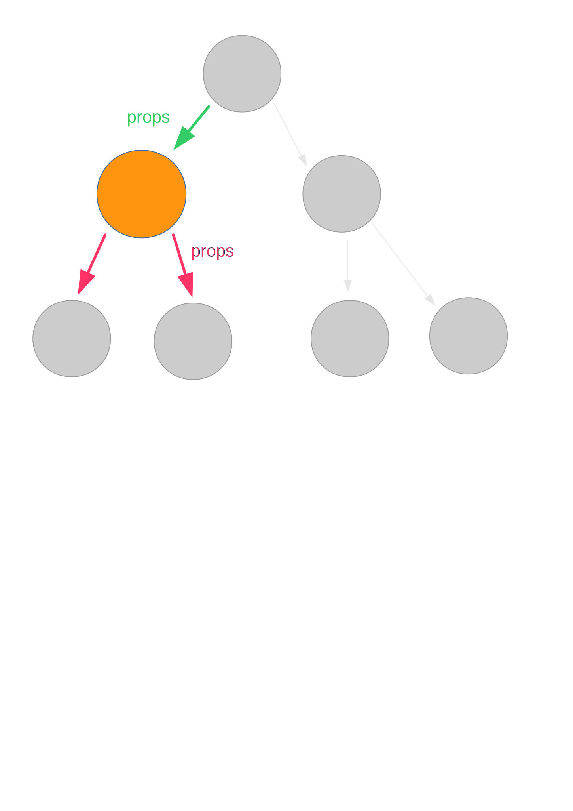
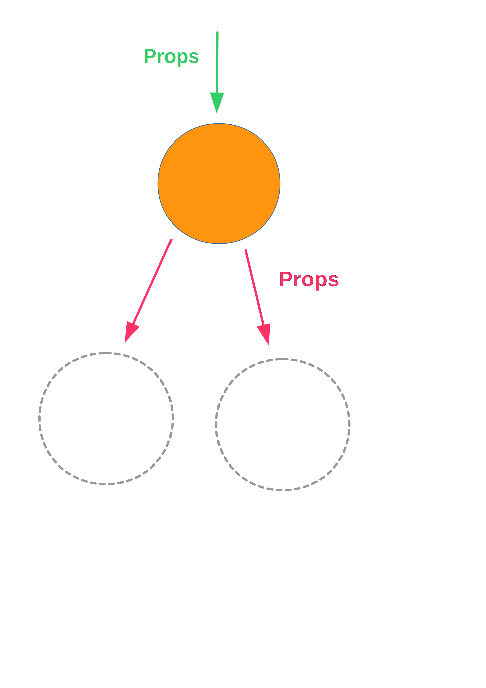
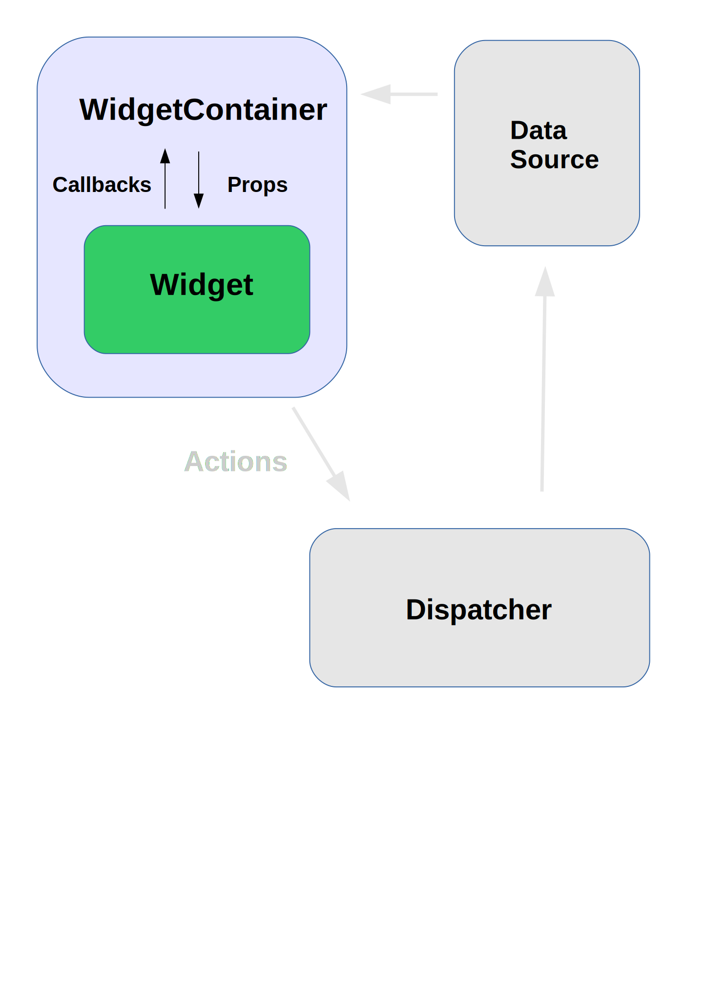

class: center, middle # React Testing Tools & Tricks --- # UI Testing ??? --- class: center ### Heavy Machinery Required ??? The first problem is that they usually require heavy machinery to run. That can be a pain to setup and slow. --- class: center ## Fragile Tests ??? The next problem is that they run in complex environments which can be flakey. --- # UI Testing with React ??? React is like a virtual machine which isolates us from First I'm going to go briefly over the basic of testing a React app and how to get a component test running in both Node and the browser. Then I'll look at different ways to isolate pieces of the app in testing to make debugging easier, including some of the new features in the recent v0.13 release. --- # React TestUtils ```js React.addons.TestUtils.renderIntoDocument(component) .scryRenderedDOMComponentsWithClass(component) .findRenderedDOMComponentWithTag() ``` ```js React.addons.TestUtils.Simulate.click(component, event) .mouseDown(component, event) ``` ??? React ships with a utility library called TestUtils that lets us render a component into a detached DOM element, get access to the component's DOM nodes and simulate events on them. This is fine for simple components, we render a component with a set of props and state, and make assertions on the DOM markup. --- class: middle ```js describe('TweetItem', () => { it('should display item details', () => { const tweet = { user: { screenName: 'reactjs', ... }, text: 'Announcing React v0.13', ... }; const item = React.addons.TestUtils.renderIntoDocument( <TweetItem tweet={tweet}/> ); const userScreenName = React.findDOMNode(item.refs.userScreenName); expect(userScreenName.textContent).to.equal('@' + tweet.user.screenName); const text = React.findDOMNode(item.refs.text); expect(text.textContent).to.equal(tweet.text); }); }); ``` ??? A basic test for a React component consists of rendering it either into a detached DOM element or a container element on the page, then getting a reference to the rendered DOM nodes, checking their visual structure and using the Simulate functions to simulate user input and checking that they respond as we expect. --- # jsdom * Fake DOM environment that runs in Node * Good Enough™ for a lot of testing ```js // setup.js - setup the fake DOM jsdom.env({ html: '<body><div id="app"></div></body>', done: (errors, window) => { global.document = window.document; global.window = window; global.navigator = window.navigator; } }); ``` ```js // run our tests mocha --require setup.js <test files> ``` ??? This works fine in a browser, but browsers add complexity and performance overhead to the testing environment. Most React components don't actually need a full fidelity environment to work in though. jsdom provides an implementation of the DOM that is good enough for testing most components. When React loads, it inspects its execution environment and checks whether the DOM is available. This means that we need to set up jsdom _before_ requiring React. Facebook's Jest testing tool ships with jsdom and does this for you, but it is quite easy to integrate with other frameworks. jsdom is great, but the DOM is big and complex so its useful to be able to run tests in the browser as well. For running the tests in the browser, you can take the same code and use your favorite module bundler such as Webpack or Browserify. The only difference is that you don't load the fake DOM environment. [Demo - Mocha tests on the command-line and in the browser] [Reference to Github repo] # ??? So that's the basics we need for running a UI test on the command line and in the browser. Getting the browser out the way for routine testing makes the workflow faster. If 'mocha' is set up to watch your test files for changes it can re-run appropriate tests in a few hundred milliseconds. It makes it easier to run tests in a CI environment and cuts out some sources of unpredictability. But if we have a complex UI and we're testing a component near the top of the tree, it is still vulnerable to being broken by a change lower down. --- # Isolation  A React application is essentially a big tree of components. Testing the DOM output is fine for the leaves at the bottom, but as we go higher up the tree, that becomes brittle. In the example app, I have a list of tweets. One way to check if the list is working properly is to count the number of DOM nodes that have whatever class I use on the container of an individual tweet. If I make changes to the TweetItem component however, that could cause all the higher-level tests to fail. The higher up the tree we go, the more that could change under it and cause it to fail. --- # Isolation <img class="center-block" src="images/component-inputs-outputs.svg" width="800"> If we zoom in on an individual component, we can think of it as a little state machine that takes a stream of props and events as inputs, and produces a stream of child component trees and callbacks as outputs. What we want to do is cut out the rest of the picture and test each little machine in isolation. There are several tools that can help with this. --- # Think in Components & Data Flow ??? --- # Component Matching ```js React.addons.TestUtils.scryRenderedComponentsWithType(component, type) .isCompositeComponentWithType(component, type) .findAllInRenderedTree(component, testFunction) ``` ??? The first tool we have is a set of functions in TestUtils that test the type of a component, rather than what the DOM looks like. This means that we can check that our tweet list renders the right number of TweetItem children and be isolated if a TweetItem changes. This is better, but it still means that when testing the TweetList component, we'd execute all the render() functions for lower levels in the tree. --- # Shallow Rendering  ??? React v0.13 has a new feature which helps with this. Its called shallow rendering. React has two main outputs - render a tree of components to a string, render a tree of components to a DOM. This gives us something like a third option. What it does is render only one level of the tree. In this case, I create a shallow renderer and ask it to render my TweetList. The render() function of my TweetList will be called and it will return a tree of elements. Usually what React would then do next is take each child element in the tree, create a corresponding component for it, and call the render() method on that and so on down the tree. What shallow rendering does is create a dummy component for each of the child elements, which doesn't actually get mounted or rendered. --- class: middle ```js const shallowRenderer = React.addons.TestUtils.createRenderer(); const renderList = () => { shallowRenderer.render(<TweetList tweets={TEST_TWEETS}/>); const list = shallowRenderer.getRenderOutput(); return list.props.children.filter(component => component.type == TweetItem); } let items = renderList(); expect(items.length).to.equal(TEST_TWEETS.length); expect(items[0].props.isSelected).to.equal(false); items[0].props.onClick(); items = renderList(); expect(items[0].props.isSelected).to.equal(true); ``` ??? There are some limitations to this feature - you can't access 'refs' and you can't simulate an event on the child nodes. What you can do however is access the props that were passed to the children, so you can test a piece of the component pipeline. --- class: center, middle # Mocking ??? Shallow rendering helps with isolating the rendering part, but we still have all the other logic that touches components, like fetching data. If you're used to Angular, that has a dependency injection --- <img class="center-block" src="images/jest-logo.png"> * Automatic mocking * Built-in fake DOM * Automatic parallelization ??? Facebook provides a unit testing tool geared towards React, Jest. For testing in node, its a batteries-included solution. The approach to mocking is dramatic - --- # Caveats * Automatic mocking * Does not currently run in the browser * Differences between jsdom and <insert browser here>'s DOM * Browser dev tools ??? There are some caveats though, it doesn't currently run in the browser. Automatic mocking is interesting. On the upside, it is very thorough - you're unlikely to accidentally use a real module in your tests. On the other hand, all of the functions created by the mocked modules return undefined by default. In JavaScript, that 'undefined' value can propagate a long way through the system before it eventually turns into an error. I found that taking an existing codebase and making it work with Jest can be tricky because of this. The idea of hooking into require() is very useful though - especially because a common pattern is to make a React component a module. it means we can use the same approach to mock components, Flux stores, remote data sources etc. So how does hooking into require() work? --- class: center, middle .center.large-code[`require('module');`] ??? Node.js' module loading system which implements require() is surprisingly simple. A little known fact is that you can 'require()' the module which implements 'require()', and monkey patch it or inspect internals. Not part of the public documentation, but that is how tools such as rewire() work. --- # Mocking `require()` with rewire ```js import rewire from 'rewire'; var TweetList = rewire('../src/TweetList'); class StubTweetItem extends React.Component { render() { return <div>stub tweet</div>; } } TweetList.__set__('TweetItem', StubTweetItem); ``` * Can be used in _Node_ and the browser via _rewire-webpack_ ??? There are several libraries that can be used to mock out require()'d modules. I'm using rewire(). It works by replacing the call to require() for the module you want to test with one to rewire(). That requires the real module and then returns one with methods that let you inspect and replace private variables, such as the modules it requires. This requires more work than Jest, but it gives you more control. rewire() also has the advantage that it works with Webpack. So you can write a set of tests that run in Node, and then bundle up the same set of tests and run them in a real browser. --- ## Visual and Container Components  ??? That covers isolating individual components. But what about more complex components, ones that fetch data, send actions to Flux stores etc. I'm just going to recap a pattern that was mentioned in a React.conf talk in January which makes testing these easier. That is to separate out complex components into one which is purely visual - it takes data as input, displays it and responds to user inputs by invoking callbacks passed to it and a container which is responsible for fetching data from stores and dispatching actions. This is helpful for reusability because the visual component isn't connected to how its data is fetched, but also useful for testing. When testing the container, you can mock out the data source and check that when data updates occur it updates its state and renders the right type and number of children with the expected props. When the action callbacks passed to the children are invoked, you can check that the correct action is dispatched. When testing the visual component, you can check that given the right input props, it renders the right DOM structure and given the right inputs, it triggers the right callbacks on its props. This does start to look somewhat like the controller in a traditional MVC framework, the difference though is that the data flow is better defined and the controller doesn't write to the model directly. --- ### github.com/robertknight/react-testing Robert Knight @robknight_ ??? I hope this has been useful. I have code for a basic setup showing how to get a test running in Node and the browser on Github, plus links to a number of great tutorials and videos.